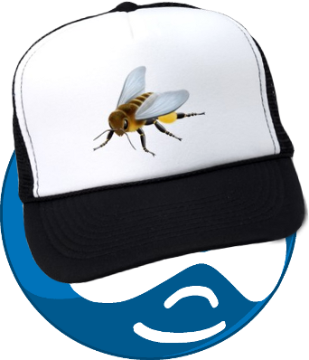

Quality Assurance for Drupal Sites with Behat and Mink



Quality Assurance
QA touches every part of the development cycle
- Sales
- Discovery
- Development
- Deployment
- Support
Methodology
Waterfall
 Paul Hoadley / CC-BY-SA-2.5
Paul Hoadley / CC-BY-SA-2.5
Methodology
Agile
 Devon Fyson / CC-BY-SA-3.0
Devon Fyson / CC-BY-SA-3.0
Methodology
On-Demand
http://www.untoldentertainment.com
Flavors of BDD tools
- Ruby has Cucumber
- Python has Lettuce
- PHP has Behat
All of these support three main principals of
Behavior Driven Development
BDD Principal 1:
Everyone on the team should refer to website features in the same way

BDD Principal 2:
Any feature on the site should have an identified verifiable value to the business or organization
BDD Principal 3:
Ignorance is the biggest constraint of software development

Hic sunt dracones
Behat provides a common language
Selenium test
package org.openqa.selenium.example;
import org.openqa.selenium.By;
import org.openqa.selenium.WebDriver;
import org.openqa.selenium.WebElement;
import org.openqa.selenium.htmlunit.HtmlUnitDriver;
public class Example {
public static void main(String[] args) {
// Create a new instance of the html unit driver
// Notice that the remainder of the code relies on the interface,
// not the implementation.
WebDriver driver = new HtmlUnitDriver();
// And now use this to visit Google
driver.get("http://www.google.com");
// Find the text input element by its name
WebElement element = driver.findElement(By.name("q"));
// Enter something to search for
element.sendKeys("Cheese!");
// Now submit the form. WebDriver will find the form for us from the element
element.submit();
// Check the title of the page
System.out.println("Page title is: " + driver.getTitle());
}
}
Behat test
Given I am at "http://www.google.com"
When I enter "Cheese!" for "Search"
And click "Google Search"
Then I should see the text "results"
Behat incorporates the business value
First, tell a story
Feature: Do not let anonymous people use the PHP filter
In order to prevent site hacking
As a site owner
I need to know that my site is properly configuredNext, elaborate with scenarios
Scenario: No php filter for comments
Given I am on the homepage
When I follow "Articles"
And I follow "Read more"
Then I should not see "You may post PHP code.
You should include <?php ?> tag"
Given: Put the system in a known state
When: Act on the system
Then: Describe the result of the actionFinally, save to a file and execute
Feature: Do not let anonymous people use the PHP filter
In order to prevent site hacking
As a site owner
I need to know that my site is properly configured
Scenario: No php filter for comments
Given I am on the homepage
When I follow "Articles"
And I follow "Read more"
Then I should not see "You may post PHP code.
You should include <?php ?> tag"
1 scenario (1 passed)
4 steps (4 passed)
0m0.545sBehat
Discover what we don't know
Feature: Do not let anonymous people use the PHP filter
In order to prevent site hacking
As a site owner
I need to know that my site is properly configured
Scenario: No php filter for comments
Given I am on the homepage
When I follow "Articles"
And I follow "Read more"
Then I should not see "You may post PHP code.
You should include <?php ?> tag"
The text "You may post PHP code. You should include <?php ?>
tag" appears in the text of this page, but it should not.
1 scenario (1 failed)
4 steps (3 passed, 1 failed)
0m0.545sMink
Web acceptance testing
Separates the concept of testing web applications from the actual browser used.
Supported browser drivers
- Goutte
- Selenium
- WebDriver (Selenium 2)
- Sahi
- Zombie
Mink Extension
Provides language and corresponding step-definitions for testing web applications.
Mink Extension
Provides language and corresponding step-definitions for testing web applications.
Given I visit "http://google.com"
When I fill in "Drupal" for "Search"
And press "Search"
Then I should see the link "http://drupal.org"The Drupal Extension
- Provides language and step-definitions specific to testing Drupal web applications.
- Builds on top of the Mink Extension
- http://drupal.org/project/drupalextension
The Drupal Extension
Given I am logged in as a user with the "administrator" role
When I am at "node/add"
Then I should see the link "Article"
And I should see the link "Basic page"Getting started with the Drupal Extension
Sample composer.json file
{
"require": {
"drupal/drupal-extension": "*"
},
"minimum-stability": "dev",
"config": {
"bin-dir": "bin/"
}
}Getting started with the Drupal Extension
You'll need to install Composer (http://getcomposer.org). I install
it globally so I can just call composer.
$ composer install
Getting started with the Drupal Extension
Sample behat.yml file
default:
paths:
features: 'features'
extensions:
Behat\MinkExtension\Extension:
goutte: ~
selenium2: ~
base_url: http://git6site.devdrupal.org/
Drupal\DrupalExtension\Extension:
blackbox: ~Getting started with the Drupal Extension
List of available step definitions
bin/behat -dlLive demo
http://www.youtube.com/embed/-EmGuuHGUhk?rel=0
Roadmap
Roadmap
Provide reusable language and supporting step definitions common to most Drupal sites.
(Will be ongoing)
Roadmap
Provide multiple ways of manipulating the backend (Drivers).
- Blackbox (no direct access to backend)
- Drush (uses Drush aliases to access local or remote sites)
- Drupal (uses direct Drupal API calls to access local sites)
- Services
Roadmap
Support multiple major versions of Drupal
Roadmap
- Ability to find and load sub-contexts that can be bundled with contrib modules
- Complex features can have common step-definitions (think Media, or Views)
Thank you!
Questions?
Druplicon beehat by jessehsSlides available at http://jhedstrom.github.com
Slides powered by http://github.com/schacon/showoff